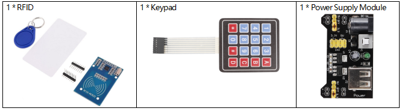
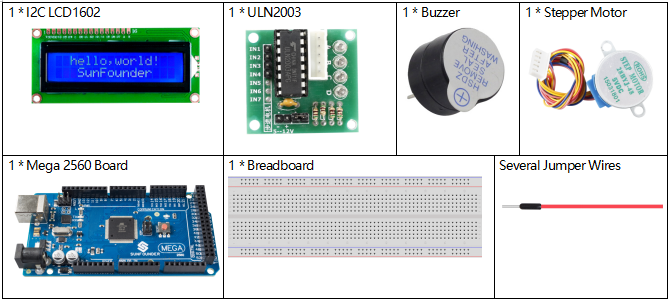
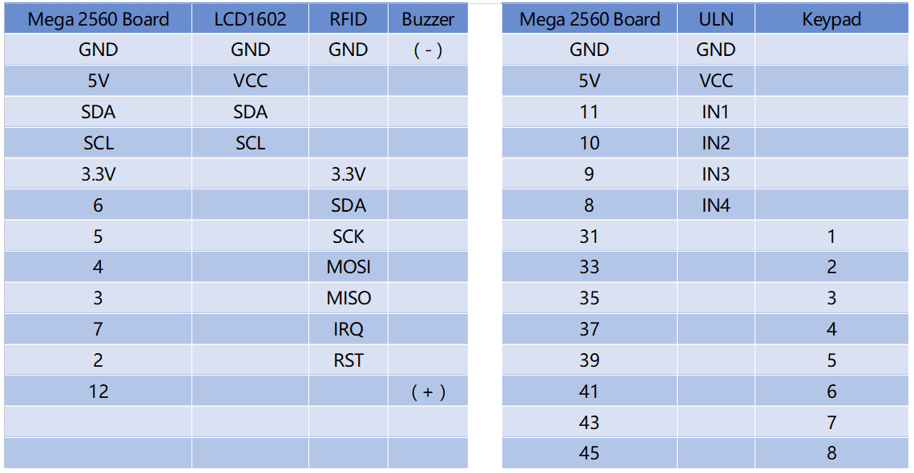
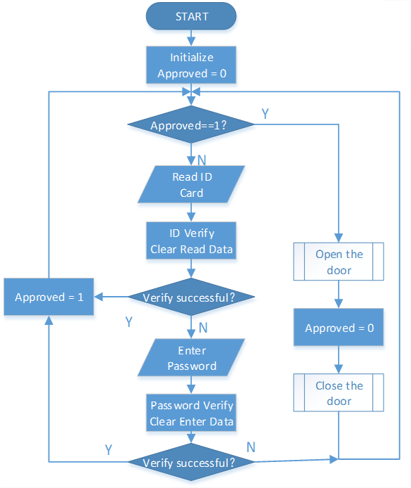

3.5 Zugangskontrollsystem¶
Überblick¶
Das Zugangskontrollsystem ist das System zur Steuerung des Eingangskanals, das auf Basis des traditionellen Türschlosses entwickelt wird. Das traditionelle mechanische Türschloss ist nur ein einfaches mechanisches Gerät, egal wie vernünftig das Strukturdesign ist, wie stark das Material ist, Menschen können es auf verschiedene Arten öffnen. Der Schlüssel zum Ein- und Ausgang (wie ein Bürogebäude, ein Hotelzimmer) ist umständlich. Wird der Schlüssel übersehen oder ersetzt, ist das Schloss durch den Schlüssel zu ersetzen. Um diese Probleme zu lösen, gibt es elektronische Magnetkartenschlösser und elektronische Code-Schlösser, die die Verwaltungsebene der Zugangskanäle bis zu einem gewissen Grad verbessert haben, und dann ist die Kanalverwaltung in das elektronische Zeitalter eingetreten.
Erforderliche Komponenten¶
 Fritzing Circuit¶
In diesem Beispiel wird das Stromversorgungsmodul zum Versorgen des Steckbretts verwendet. Wir erhalten die GND der Mega 2560-Platine, die an die Kathodenschiene des Steckbretts angeschlossen ist, die GND von ULN2003 an die Kathodenschiene des Steckbretts, die VCC an den 5-V-Ausgang der Stromversorgung und den Schrittmotor an OUT1-OUT5 von ULN.

Schematische Darstellung¶

Beispiel Erklärung¶
Der Workflow des Zugangskontrollsystems wird im Flussdiagramm angezeigt.
Wenn keine autorisierte ID identifiziert wurde (die Variable „Genehmigt“ entspricht 0), führt das Gerät Funktionen zur ID-Identifizierung und Kennwortidentifizierung aus.
Wenn die autorisierte ID identifiziert wird („Genehmigt“ entspricht 1), öffnet sich die Tür. Danach wird die Tür einige Sekunden später geschlossen und der identifizierte Status zurückgesetzt („Genehmigt“ entspricht 0).
Zusätzlich zur zentralen Zugriffssteuerungsfunktion verwendet das Projekt auch LCD und aktiven Summer, um die Arbeit des Benutzerinteraktionssystems des Zugriffskontrollsystems abzuschließen.
{kind=link}